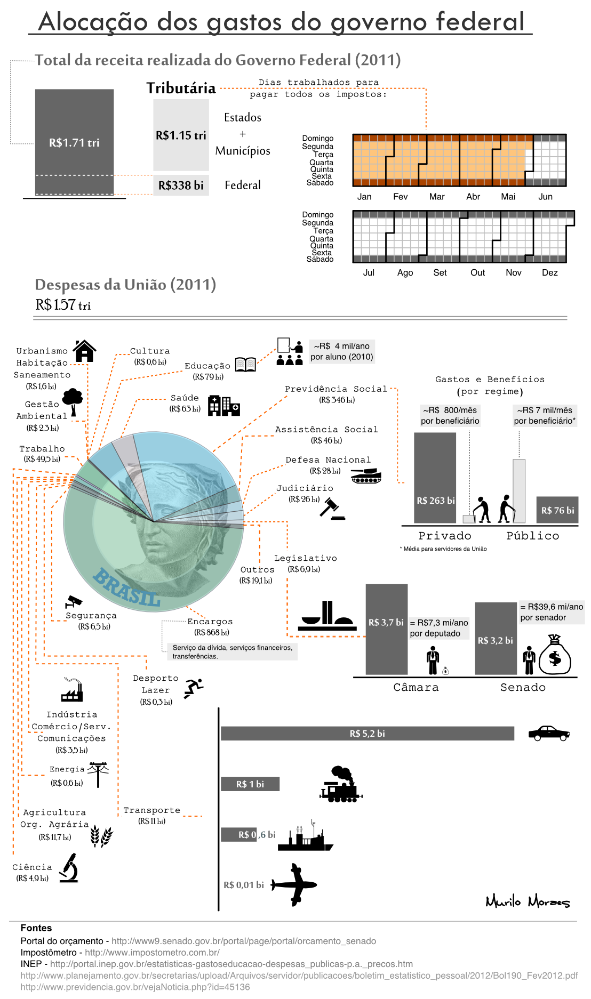

Economia / Arquivo
Você sabe como é a alocação de gastos do governo federal?
Uma leitura das despesas federais por função a partir dos dados do Siga Brasil.
Publicação original
Me inspirei em um post do Revolution Analytics para fazer o infográfico abaixo. Não tem grandes revelações sobre a gestão do dinheiro público federal; porém, é uma maneira mais simples que as tabelas do orçamento de apresentar a divisão dos gastos.
Como descrito na legenda, utilizei os dados do Siga Brasil (Portal do Orçamento – Senado Federal) que disponibiliza os dados do orçamento de uma forma user friendly. Utilizei a própria divisão do orçamento por função que tem por objetivo retratar a distribuição setorial das despesas realizadas pelo governo (com a ressalva que esta divisão por vezes inclui gastos que não estão estritamente relacionados à área especificada). Também fiz uso do cálculo do Impostômetro sobre a quantidade de dias trabalhados para pagar os impostos. O infográfico foi feito no Inkscape.

